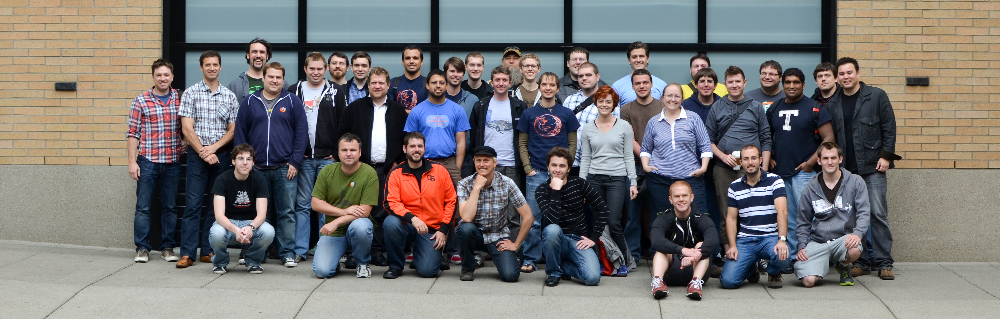
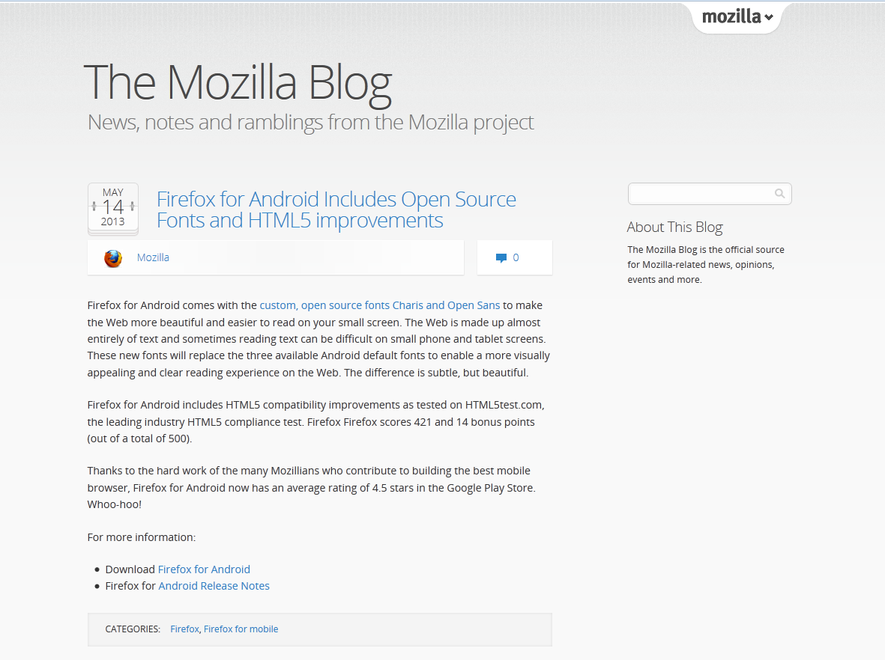
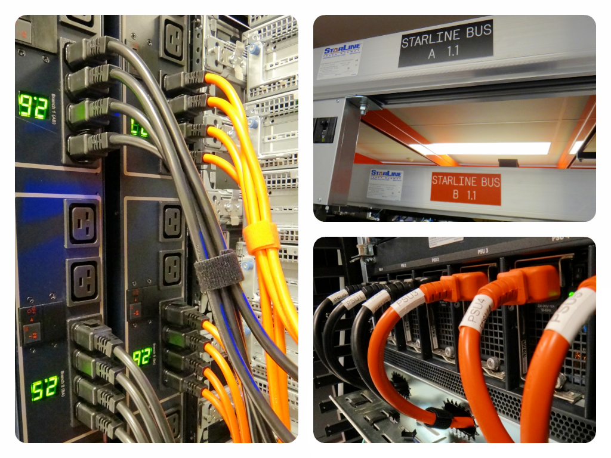
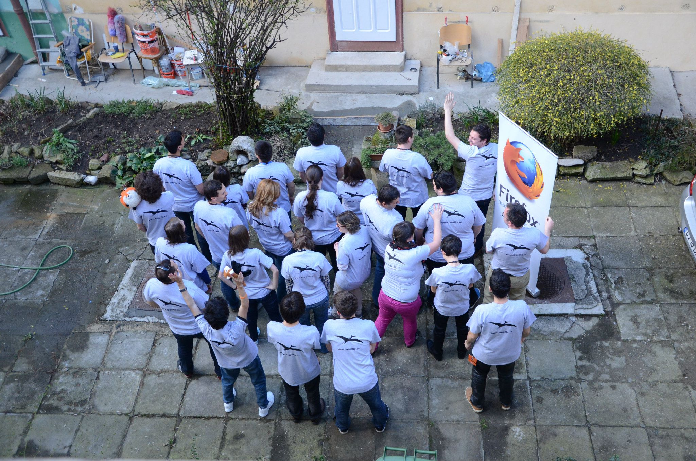
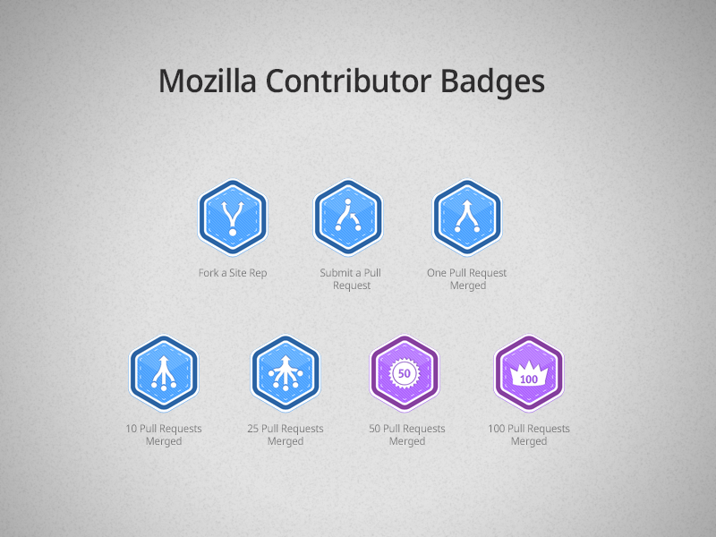

Mozilla Romania Community and Wordpress
Alex Lakatos,
@lakatos88
or
alex.lakatos@mozilla.ro
Ongoing work…
Webdev Team

What do we have?
MoCo - 13 WordPress installations
MoFo - 3 WordPress installations
What do we have?
http://blog.getfirebug.com
http://blog.lizardwrangler.com
http://hacks.mozilla.org
http://blog.mozilla.org
https://quality.mozilla.org
http://rockyourfirefox.com
http://www.brendaneich.com
What do we have?
http://openbadges.org
http://mozillafestival.org
http://blog.mozillaignite.org

Plugins Galore
Mozilla Persona Plugin
implements the BrowserID protocol using Mozilla's Persona service.
Who:
Shane Tomlinson
Issue Tracker
Open Attribute Plugin
makes it easy to publish WordPress content with a Creative Commons license.
Who:
OpenAttribute
,
pgogy
,
barlas
Forum
WPBadger
is a simple WordPress plugin for issuing badges and adding them to a user's
Open Badges
backpack
Who:
Dave Lester
GitHub
Promote MDN
automatically links keywords and phrases to MDN pages.
Who:
groovecoder
Promote MDN
What are we running on?

RHEL 6
running our own clusters
a mix of phisical hadware and VMs
What about maintainance?
3 people actively working on Wordpress
all installs are up to date on the latest stable 3.5.1
using nagios for updates
Mozilla Romania

mozilla.ro
133 Posts
10 Pages
30 Categories
225 Tags
mozilla.ro
Visitors: 16525
Unique visitors: 16072
Page views: 41627 (Ø 2.7)
Max. page views in one visit: 43
Total time spent: 365h 32m 3s
Time/visit: 0h 1m 33s
Bounce count: 5487 (33%)
mozilla.ro
Akismet
Better WP Security
Broken Link Checker
Easing Slider "Lite"
Easy Contact
Google XML Sitemaps
Members List
Subscribe to Comments Reloaded
The Events Calendar
WordPress SEO
WP-PageNavi
WP-Piwik
WP-Polls
WP-Sentinel
WP Security Scan
WPtouch
Yet Another Related Posts Plugin
Get Involved

Thanks
Alex Lakatos
@lakatos88
alex.lakatos@mozilla.ro
http://alexlakatos.github.io/slides/wordcamp-transylvania/
Photo by Yortw